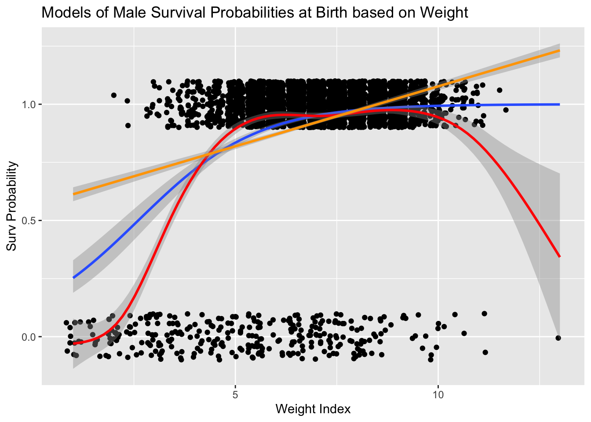
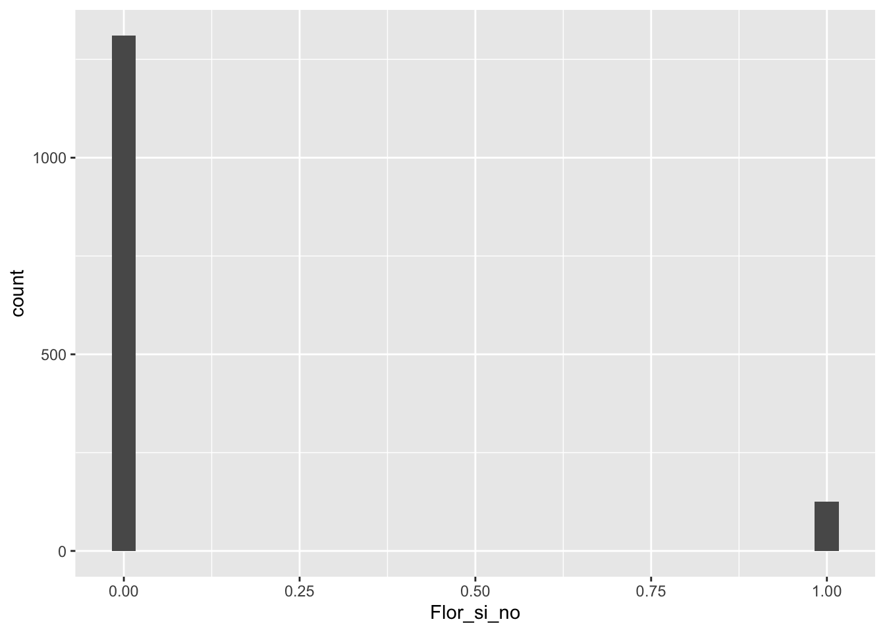
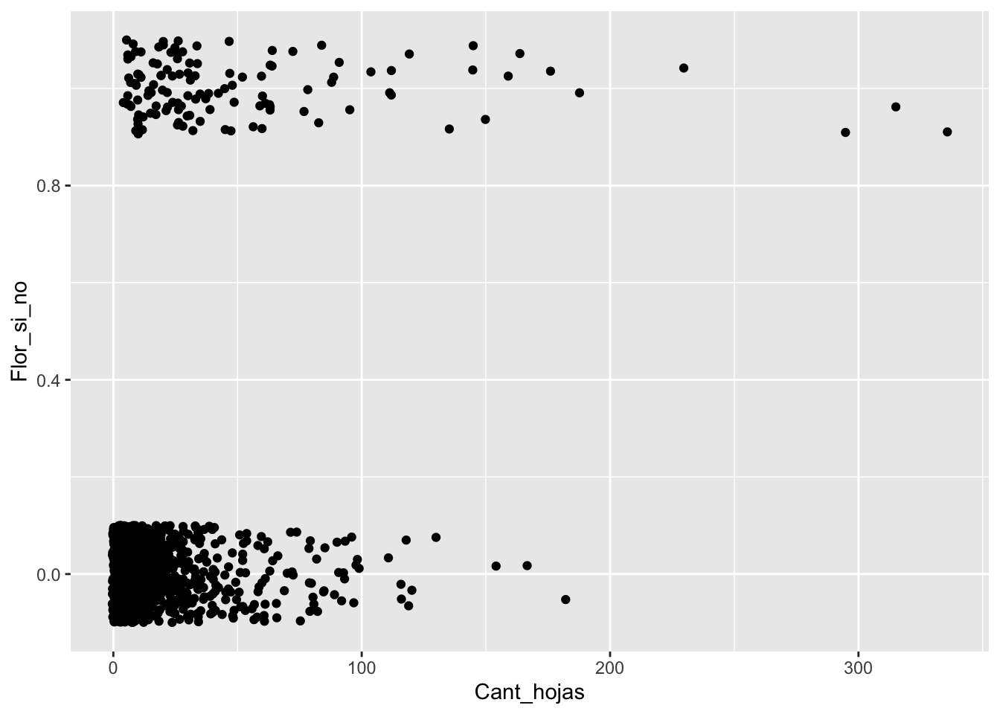
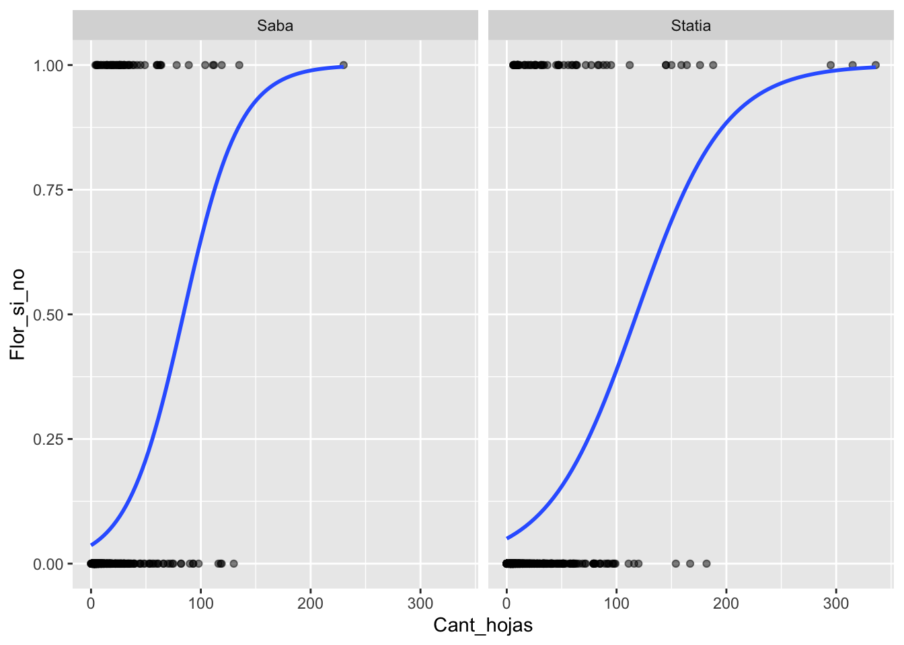
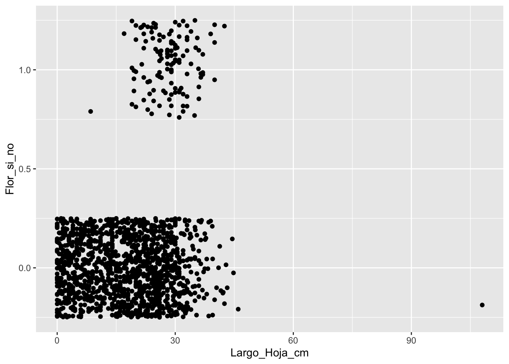
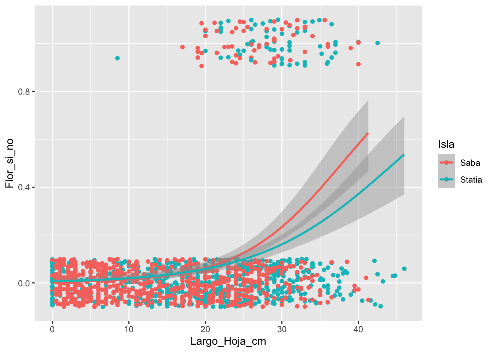

Regresión logística


Cargamos los paquetes requeridos:
library(ggplot2)
library(tidyverse)Regessión Logística
La regresión logística es el procedimiento para evaluar el efecto de una variable continua sobre una variable discreta binaria. En este caso la variable discreta está limitada a solamente dos alternativas. Por ejemplo: si o no, vivo o muerto, presente o ausente, tiene flores o no tiene flores, estar infectado o no estar infectado con el COVID-19, o Trump o Biden. Típicamente se codifica con valores numéricos. En uno de los estados se la asigna un “0” y la otra se la asigna un “1”.
En el siguiente dataset ficticio la variable continua representa el tamaño de 20 bacterias (en µm), y la variable discreta binomial representa si esta bacteria hizo fisión (1) o no (0).
Ejemplo de un patrón casi perfecto
Con la siguiente gráfica se observa que cuando las bacterias son muy pequeñas no ocurre fisión y cuando miden 9 µm o más hay una fisión binaria. Si una bacteria tiene un tamaño de 10 µm tiene una probabilidad de fisionarse de 50%.
continuous=c(rep(1:20,2))
binomial=c(0,0,0,0,0,0,0,0,1,0,1,1,1,1,1,1,1,1,1,1, 0,0,0,0,0,0,0,0,0,0,1,1,1,1,1,1,1,1,1,1)
df=data.frame(continuous,binomial)
df## continuous binomial
## 1 1 0
## 2 2 0
## 3 3 0
## 4 4 0
## 5 5 0
## 6 6 0
## 7 7 0
## 8 8 0
## 9 9 1
## 10 10 0
## 11 11 1
## 12 12 1
## 13 13 1
## 14 14 1
## 15 15 1
## 16 16 1
## 17 17 1
## 18 18 1
## 19 19 1
## 20 20 1
## 21 1 0
## 22 2 0
## 23 3 0
## 24 4 0
## 25 5 0
## 26 6 0
## 27 7 0
## 28 8 0
## 29 9 0
## 30 10 0
## 31 11 1
## 32 12 1
## 33 13 1
## 34 14 1
## 35 15 1
## 36 16 1
## 37 17 1
## 38 18 1
## 39 19 1
## 40 20 1# producción del gráfico
ggplot( df, aes(x=continuous, y=binomial)) +
geom_point() +
stat_smooth(method="glm", method.args = list(family = "binomial"), se=F) 
Preparando el modelo
model<-glm(binomial~continuous, data= df, family = binomial())Evaluando el modelo
Igual como en una regresión lineal se evalúa el intercepto y los coeficientes de las variables continuas. En este caso tenemos solamente una variable continua. El Estimate son los coeficientes en la escala \(logit(p)=\log\frac{p}{1-p}\), donde las \(p's\) representan las probabilidades de estar en el estado “1”. El valor de \(p = Pr(>|z|)\) es la probabilidad de que el intercepto o las pendientes sean diferentes de cero.
Los valores de Null Deviance y Residual Deviance son índices Bondad de ajuste o sea del goodness of fit del modelo. Valores grandes siempre sugieren que el modelo no es bueno.
La desviación nula (Null Deviance) muestra qué tan bien la variable de respuesta es predicha por un modelo que incluye solamente el intercepto (gran media). La desviación de los residuales donde incluye las de variables independientes.
En nuestro modelo ficticio, la desviación nula, el Null Deviance es bien alto (55.35), pero cuando se incluye la variable independiente la desviación residual (residual deviance) baja mucho (7.83). Esto surgiere que el modelo no es muy bueno a predecir si las células van tener una fisión, al contrario el tamaño es una variable que explica gran parte de la variación para predecir la probabilidad de fisión binaria.
summary(model)##
## Call:
## glm(formula = binomial ~ continuous, family = binomial(), data = df)
##
## Deviance Residuals:
## Min 1Q Median 3Q Max
## -1.17741 -0.02124 0.00032 0.02124 1.92375
##
## Coefficients:
## Estimate Std. Error z value Pr(>|z|)
## (Intercept) -16.7941 8.5378 -1.967 0.0492 *
## continuous 1.6794 0.8489 1.978 0.0479 *
## ---
## Signif. codes: 0 '***' 0.001 '**' 0.01 '*' 0.05 '.' 0.1 ' ' 1
##
## (Dispersion parameter for binomial family taken to be 1)
##
## Null deviance: 55.3517 on 39 degrees of freedom
## Residual deviance: 7.8364 on 38 degrees of freedom
## AIC: 11.836
##
## Number of Fisher Scoring iterations: 9Modelo Lineal Generalizado
En este modulo se hace introduce otro tipo de herramienta para el análisis de datos, denominado Modelo Lineal Generalizado, GLM. Lo interesante de este método hay múltiples opciones para el análisis a pesar de que la variable de respuesta no tenga una distribución normal. En este módulo solamente se estará presentando el tipo de datos donde la variable de respuesta (Y) es binomial.
Hay tres componentes en cualquier GLM:
Componente aleatorio: se refiere a la distribución de probabilidad de la variable de respuesta (Y); por ejemplo, distribución binomial (0, 1,: Si o No: Vivo o Muerto). Nota que la variable \(Y\) puede tener otra distribución incluyendo la distribución normal, lognormal, proporción, Poisson y muchos mas.
Variable predictivas: especifica las variables explicativas \(X_1,\ X_2,\ X_3,...X_k\) en el modelo, la combinación lineal se puede expresar con la siguiente forma; por ejemplo, \(\beta_0+\beta_1\cdot x_1+\beta_2\cdot x_2+\ ...+\beta_k\cdot x_k\) como hemos visto en una regresión lineal.
Función de enlace: η o g (μ): especifica el enlace entre componentes aleatorios y sistemáticos. Dice cómo el valor esperado de la respuesta se relaciona con las variables de la ecuación lineal explicativa.
Los supuestos de la regresión logística.
- El resultado es la variable es binaria o también conocida como dicótoma (sí o no: presente o ausente, 1 o 0).
- Existe una relación lineal entre el logit (p) de la variable de repuesta y las variables predictora.
- No hay valores extremos o valores atípicos en los predictores continuos.
- No hay correlaciones altas (es decir, multicolinealidad) entre los variables predictores.
Evaluando si el modelo es aceptable
Hay muchas alternativas para evaluar si el modelo logístico es aceptable o sea que explica parte de la variación. El método típico de \(R^2\) no es viable para la regresión logística, pero hay múltiples alternativas. En el siguiente enlace pueden observar algunas de estas. Pero nota que no hay uno que es necesariamente mejor, cada una de estas alternativas tiene sus ventajas y desventajas Una de las desventajas es que la escala no es como \(R^2\) que varia de 0 a 1, por consecuencia sus interpretaciones son siempre más complejas.
https://www.r-bloggers.com/evaluating-logistic-regression-models/
Comparar modelos lineal y logístico
El primer paso es entender la diferencia entre una regresión lineal y una regresión logística. Podemos visualizar ambas formula y ver como difieren.
La regresión lineal:
\[Y_i=\beta_0+\beta_1X_{1i}\beta_2X_{2i}\] Regresión logística:
\(p=P(Y=1)\) o sea la probabilidad que p tenga el valor de 1 o \(1-p= 1-P(Y=1)\) que seria el valor de 0 en su conjunto de datos.
\[\log\frac{p}{1-p}=\beta_0+\beta_1X_i+\beta_2X_i\] Nota que la primera ecuación es un modelo que trata de predecir el valor de Y en la segunda se estima la probabilidad de que el valor de las variables predictora tenga una probabilidad entre \(0\) y \(1\). Las probabilidades van a variar de \(0\) a \(1\) o sea de 0% a 100%. El vocabulario formal es que las respuesta son binarias o que siguen la distribución de Bernoulli.
En la literatura la formula también se representa como \(logit(p)\).
\[logit\left(p\right)=\log\frac{p}{1-p}=\beta_0+\beta_1X_i+\beta_2X_i\]
En el siguiente enlace se puede encontrar más información https://en.wikipedia.org/wiki/Logistic_regression
Primer ejemplo
Karn and Penrose data Set
Los Datos
Los datos provienen de un estudio realizado por Mary N. Karn and L. S. Penrose publicado en Annals of Eugenics, titulado Birth Weight and gestation time in relation to maternal age, parity and infant survival publicado en 1951. Estaremos usando solamente una parte de los datos. El periodo de gestación y el peso de los bebés varones al nacer y su supervivencia (falleció= 0 y sobrevivió= 1). Para facilitar el trabajo he modificado los datos un poco para cumplir con las tareas asignada.
El archivo “Karn_Penrose_infant_survivorship.csv” tiene datos sobre 7036 nacimientos entre los años 1935 y 1946 y tiene 4 columnas:
- Line_number = la secuencia de los datos
- Gestation_Time_days = El periodo de gestación en días
- Weigth_lb = El peso del bebe en libras
- Surv_Index = “0” o “1”
library(readr)
Karn_Penrose_infant_survivorship <- read_csv("Data/Karn_Penrose_infant_survivorship.csv")
KPdata=Karn_Penrose_infant_survivorship
head(KPdata)## # A tibble: 6 × 4
## row_num Survival Weigth_lb Gestation_Time_days
## <dbl> <dbl> <dbl> <dbl>
## 1 1 0 1 155
## 2 2 0 1 165
## 3 3 0 1 165
## 4 4 0 5.5 170
## 5 5 0 1 180
## 6 6 0 1.5 180tail(KPdata)## # A tibble: 6 × 4
## row_num Survival Weigth_lb Gestation_Time_days
## <dbl> <dbl> <dbl> <dbl>
## 1 4047 1 7 340
## 2 4048 1 7.5 340
## 3 4049 1 7.5 340
## 4 4050 1 7 345
## 5 4051 1 9 345
## 6 4052 1 10 345summary(KPdata)## row_num Survival Weigth_lb Gestation_Time_days
## Min. : 1 Min. :0.000 Min. : 1.000 Min. :155.0
## 1st Qu.:1014 1st Qu.:1.000 1st Qu.: 6.000 1st Qu.:265.0
## Median :2026 Median :1.000 Median : 7.000 Median :280.0
## Mean :2026 Mean :0.923 Mean : 7.015 Mean :276.2
## 3rd Qu.:3039 3rd Qu.:1.000 3rd Qu.: 8.000 3rd Qu.:295.0
## Max. :4052 Max. :1.000 Max. :13.000 Max. :345.0- Pregunta: Explique en sus propias palabras cuales son las hipótesis que se pueden probar. Específicamente mencione si la hipótesis es una hipótesis nula o alterna.
Hipótesis Nula: El peso de los varones y el periodo de gestación no afectan el indice de supervivencia.
Hipótesis Alterna #1: Los varones con un periodo de mayor gestación tienen mayor probabilidad de supervivencia que los varones con un mayor peso.
Hipótesis Alterna #2: Los varones con mayor peso al nacer tienen mayor probabilidad de supervivencia que los varones con un mayor periodo de gestación.
- Pregunta: Construye una gráfica la variable de respuesta
names(KPdata)## [1] "row_num" "Survival" "Weigth_lb"
## [4] "Gestation_Time_days"library(ggplot2)
ggplot(KPdata, aes(Weigth_lb))+
geom_histogram(binwidth= .25, colour="white", fill="red")+
labs(x = "Peso de los bebe, lbs", y = "Frecuencia")+
ggtitle("Frecuencia vs Peso de los bebe, lbs")
- Pregunta: Construye una gráfica la variable de las variables explicativas
- Periodo de gestación
- Peso de los varones al nacer
ggplot(KPdata, aes(Gestation_Time_days))+
geom_histogram(binwidth= 4, fill="white", colour="red")+
labs(x= "Duración de Gestación", y="Frecuancia")+
ggtitle("Frecuencia vs Duración de Gestación")
Evaluando la distribución de la variable de respuesta
ggplot(KPdata,aes(Survival))+
geom_histogram(fill="white", colour="red")+
labs(x="Survival")+
ggtitle("Count vs Survival")
- Pregunta: Usando la prueba correcta evalúa la relación entre la supervivencia y:
- periodo de gestación
- peso de los varones al nacer
library(car)
names(KPdata)## [1] "row_num" "Survival" "Weigth_lb"
## [4] "Gestation_Time_days"modelgest<-glm(Survival~Weigth_lb, data= KPdata, family = binomial())
summary(modelgest)##
## Call:
## glm(formula = Survival ~ Weigth_lb, family = binomial(), data = KPdata)
##
## Deviance Residuals:
## Min 1Q Median 3Q Max
## -3.7486 0.1921 0.2682 0.4385 1.3558
##
## Coefficients:
## Estimate Std. Error z value Pr(>|z|)
## (Intercept) -1.76189 0.22628 -7.786 6.91e-15 ***
## Weigth_lb 0.67591 0.03825 17.670 < 2e-16 ***
## ---
## Signif. codes: 0 '***' 0.001 '**' 0.01 '*' 0.05 '.' 0.1 ' ' 1
##
## (Dispersion parameter for binomial family taken to be 1)
##
## Null deviance: 2199.2 on 4051 degrees of freedom
## Residual deviance: 1833.2 on 4050 degrees of freedom
## AIC: 1837.2
##
## Number of Fisher Scoring iterations: 6ggplot(KPdata, aes(x=Weigth_lb, y=Survival)) +
geom_point() +
stat_smooth( method="glm", method.args = list(family = "binomial"), se=F) 
Comparando modelos
En el siguiente gráfico se observan tres modelos, logístico, lineal y LOESS. Cada uno de estos modelos tiene sus aplicaciones en diferentes circunstancias. Si evaluamos el modelos lineal se observa que la pendiente es positiva y que sobre pasa el 100%, donde este sugiere que hay más que un 100% de probabilidad de sobrevivir. Es claro que este modelo no es adecuado ya que es biológicamente (y matemáticamente) imposible. El modelo LOESS pudiese ser aceptable, ya que bebés que nacen con un peso muy grande también pueden tener complicaciones y por ende una menor probabilidad de sobrevivir. Es es una de las razones que se usa la cesárea para dar a luz a estos bebes (en adición que para la madre también pudiese haber complicaciones).
El punto importante es que como la regresión logística representa una probabilidad, la regresión está limitada a valores entre 0 y 1, incluyendo el intervalo de confianza (el intervalo no puede tener valores menos de cero ni mayor de 1). Por consecuencia las probabilidades y el intervalo de confianza se limita entre 0 y 1.
ggplot(KPdata, aes(x=Weigth_lb, y=Survival)) +
geom_jitter(height=0.10) +
stat_smooth( method="glm", method.args = list(family = "binomial")) +
geom_smooth(color="red")+
geom_smooth(method = lm, color="orange")+
labs(x= "Weight Index", y= "Surv Probability")+
ggtitle("Models of Male Survival Probabilities at Birth based on Weight")
modelweight<- glm(Survival~Gestation_Time_days+Weigth_lb, data = KPdata, family = binomial())
summary(modelweight)##
## Call:
## glm(formula = Survival ~ Gestation_Time_days + Weigth_lb, family = binomial(),
## data = KPdata)
##
## Deviance Residuals:
## Min 1Q Median 3Q Max
## -3.4530 0.1919 0.2694 0.3967 1.4371
##
## Coefficients:
## Estimate Std. Error z value Pr(>|z|)
## (Intercept) -6.478426 0.692953 -9.349 < 2e-16 ***
## Gestation_Time_days 0.022551 0.003101 7.273 3.52e-13 ***
## Weigth_lb 0.462342 0.046481 9.947 < 2e-16 ***
## ---
## Signif. codes: 0 '***' 0.001 '**' 0.01 '*' 0.05 '.' 0.1 ' ' 1
##
## (Dispersion parameter for binomial family taken to be 1)
##
## Null deviance: 2199.2 on 4051 degrees of freedom
## Residual deviance: 1777.9 on 4049 degrees of freedom
## AIC: 1783.9
##
## Number of Fisher Scoring iterations: 6Brassavola cucullata
Los datos fueron recolectados de dos pequeñas islas del Caribe, San Eustaquio y Saba.
Brassavola cucullata pertenece a la subtribu Laeliinae y es una especie epífita y rupícola que puede formar grandes racimos de brotes. Cada brote está compuesto por un solo tallo de 3.5-12.5 cm de largo y 1-3.5 mm de diámetro y tiene una sola hoja semi-tereta de 16-35 cm de largo y solo un poco más gruesa que el tallo. Las inflorescencias terminales miden 3-30 mm de largo y suelen tener una sola flor. Las flores son en gran parte blancas con las partes delgadas del perianto que a menudo se vuelven de color amarillo pálido hacia sus ápices. El labelo es ovado-acuminado y fimbriado alrededor de la columna. El cunículo se extiende hacia el ovario inferior y no tiene néctar. Las flores engañosas tienen una fragancia nocturna dulce y espesa, que puede perdurar hasta el día. La producción de frutos depende de los polinizadores. Las cápsulas tardan varios meses en desarrollarse y son pediceladas y picudas (restos de la columna); el cuerpo de la cápsula mide entre 2 y 5 cm de largo y produce muchos miles de semillas polvorientas (Ackerman y Collaborators 2014).
En cada una de las tres poblaciones, etiquetamos todas las plantas de B. cucullata que pudimos encontrar. Observamos si cada planta era epífita o epilítica, medimos la altura sobre el suelo, buscamos evidencia de herbivoría foliar, medimos la longitud de la hoja más larga y contamos el número de brotes de hojas, flores y frutos. Si las flores estaban presentes, registramos si habían sido visitadas con éxito o no mediante una inspección visual para la eliminación de polinarios o polinias en el estigma. Estos datos se obtuvieron una vez al año durante la época de floración. Nuestras observaciones en la población de Quill abarcaron 2009-2013, en Boven 2010-2013 y en Saba 2011-2014.


La especie Brasavolla cucullata en la isla de San Eustaquio
Puede encontrar el manuscrito en este enlace, que evalúa la biología de la orquídea y la posibilidad de extinción y como las cabras impacta su supervivencias.
https://www.journals.uchicago.edu/doi/pdf/10.1086/709399
library(readr)
Student_Brassavola <- read_csv("Data/Student_Brassavola.csv")
completeBrass=na.omit(Student_Brassavola) # remove NA
head(completeBrass)## # A tibble: 6 × 10
## Island Year Pl_Num Leaf_Num LLL Bud_Num Fl_Num Fr_Num BQS Flowers_Y_N
## <chr> <dbl> <chr> <dbl> <dbl> <dbl> <dbl> <dbl> <chr> <dbl>
## 1 Saba 2011 A1701 20 26 0 1 0 Saba 1
## 2 Saba 2011 A1702 6 18 0 0 0 Saba 0
## 3 Saba 2011 A1703 5 13 0 0 0 Saba 0
## 4 Statia 2010 102 33 31 0 0 0 Boven 0
## 5 Statia 2011 102 40 34 0 0 0 Boven 0
## 6 Statia 2012 102 10 23 0 1 0 Boven 1Evaluar la tendencias centrales y la dispersión de las variables y cambio de nombre de las variables al español.
Brass=completeBrass%>%
dplyr::rename(Isla=Island, Año=Year, Numero_planta=Pl_Num,
Cant_hojas=Leaf_Num, Largo_Hoja_cm=LLL,
Cant_capullo=Bud_Num, Cant_Flores=Fl_Num,
Cant_Frutos=Fr_Num, BQS=BQS, Flor_si_no=Flowers_Y_N)Brass %>%
summary()## Isla Año Numero_planta Cant_hojas
## Length:1436 Min. :2009 Length:1436 Min. : 0.00
## Class :character 1st Qu.:2011 Class :character 1st Qu.: 3.00
## Mode :character Median :2011 Mode :character Median : 7.00
## Mean :2011 Mean : 16.66
## 3rd Qu.:2012 3rd Qu.: 17.00
## Max. :2014 Max. :336.00
## Largo_Hoja_cm Cant_capullo Cant_Flores Cant_Frutos
## Min. : 0.00 Min. :0.00000 Min. :0.0000 Min. :0.00000
## 1st Qu.: 8.50 1st Qu.:0.00000 1st Qu.:0.0000 1st Qu.:0.00000
## Median : 19.00 Median :0.00000 Median :0.0000 Median :0.00000
## Mean : 18.12 Mean :0.05153 Mean :0.1247 Mean :0.04735
## 3rd Qu.: 26.00 3rd Qu.:0.00000 3rd Qu.:0.0000 3rd Qu.:0.00000
## Max. :108.00 Max. :4.00000 Max. :7.0000 Max. :3.00000
## BQS Flor_si_no
## Length:1436 Min. :0.00000
## Class :character 1st Qu.:0.00000
## Mode :character Median :0.00000
## Mean :0.08705
## 3rd Qu.:0.00000
## Max. :1.00000- Preguntas:
- ¿Cual fue el primer año de muestreo?
- ¿Cual es promedio, mediana de plantas con flores?
- ¿Cual es promedio, mediana de plantas con frutos?
- ¿Cual es la plantas más grande considerando la cantidad de hojas?
- ¿Cual es la hoja más grande, cm?
La variable de respuesta, Y.

Tres modelos:
la probabilidad de tener flores es relacionado a la cantidad de hojas (el tamaño de la planta).
la probabilidad de tener flores es relacionado a la hoja más larga de la planta (el tamaño de la planta).
la probabilidad de tener flores es relacionado a la hoja más larga de la planta y a la cantidad de hojas.
Generalized Linear Model = glm
BrassModel.1 <- glm(Flor_si_no ~ Cant_hojas,
data = Brass, family = binomial())
summary(BrassModel.1)##
## Call:
## glm(formula = Flor_si_no ~ Cant_hojas, family = binomial(), data = Brass)
##
## Deviance Residuals:
## Min 1Q Median 3Q Max
## -2.2129 -0.3608 -0.3212 -0.3120 2.4571
##
## Coefficients:
## Estimate Std. Error z value Pr(>|z|)
## (Intercept) -3.088221 0.134013 -23.04 <2e-16 ***
## Cant_hojas 0.029925 0.002987 10.02 <2e-16 ***
## ---
## Signif. codes: 0 '***' 0.001 '**' 0.01 '*' 0.05 '.' 0.1 ' ' 1
##
## (Dispersion parameter for binomial family taken to be 1)
##
## Null deviance: 849.11 on 1435 degrees of freedom
## Residual deviance: 722.57 on 1434 degrees of freedom
## AIC: 726.57
##
## Number of Fisher Scoring iterations: 5BrassModel.2 <- glm(Flor_si_no ~ Largo_Hoja_cm,
data = Brass, family = binomial())
summary(BrassModel.2)##
## Call:
## glm(formula = Flor_si_no ~ Largo_Hoja_cm, family = binomial(),
## data = Brass)
##
## Deviance Residuals:
## Min 1Q Median 3Q Max
## -3.8476 -0.4723 -0.2920 -0.1568 2.8322
##
## Coefficients:
## Estimate Std. Error z value Pr(>|z|)
## (Intercept) -4.96559 0.33283 -14.919 <2e-16 ***
## Largo_Hoja_cm 0.11451 0.01199 9.553 <2e-16 ***
## ---
## Signif. codes: 0 '***' 0.001 '**' 0.01 '*' 0.05 '.' 0.1 ' ' 1
##
## (Dispersion parameter for binomial family taken to be 1)
##
## Null deviance: 849.11 on 1435 degrees of freedom
## Residual deviance: 722.30 on 1434 degrees of freedom
## AIC: 726.3
##
## Number of Fisher Scoring iterations: 6BrassModel.3 <- glm(Flor_si_no ~ Cant_hojas+Largo_Hoja_cm,
data = Brass, family = binomial())
summary(BrassModel.3)##
## Call:
## glm(formula = Flor_si_no ~ Cant_hojas + Largo_Hoja_cm, family = binomial(),
## data = Brass)
##
## Deviance Residuals:
## Min 1Q Median 3Q Max
## -3.3168 -0.4122 -0.2754 -0.1728 2.4903
##
## Coefficients:
## Estimate Std. Error z value Pr(>|z|)
## (Intercept) -4.673981 0.330208 -14.155 < 2e-16 ***
## Cant_hojas 0.019103 0.003132 6.100 1.06e-09 ***
## Largo_Hoja_cm 0.080198 0.013034 6.153 7.60e-10 ***
## ---
## Signif. codes: 0 '***' 0.001 '**' 0.01 '*' 0.05 '.' 0.1 ' ' 1
##
## (Dispersion parameter for binomial family taken to be 1)
##
## Null deviance: 849.11 on 1435 degrees of freedom
## Residual deviance: 677.99 on 1433 degrees of freedom
## AIC: 683.99
##
## Number of Fisher Scoring iterations: 6Remover el intercepto
Si no le interesa el intercepto se añade un “-1” después de la ultima variable predictora. Los valores de interés en nuestro caso son el intercepto y la pendiente (valor que se encuentra debajo del intercepto).
names(Brass)## [1] "Isla" "Año" "Numero_planta" "Cant_hojas"
## [5] "Largo_Hoja_cm" "Cant_capullo" "Cant_Flores" "Cant_Frutos"
## [9] "BQS" "Flor_si_no"BrassModel.1.1 <- glm(Flor_si_no ~ Cant_hojas+BQS+Largo_Hoja_cm-1,
data = Brass, family = binomial())
summary(BrassModel.1.1)##
## Call:
## glm(formula = Flor_si_no ~ Cant_hojas + BQS + Largo_Hoja_cm -
## 1, family = binomial(), data = Brass)
##
## Deviance Residuals:
## Min 1Q Median 3Q Max
## -3.2232 -0.4090 -0.2656 -0.1737 2.5854
##
## Coefficients:
## Estimate Std. Error z value Pr(>|z|)
## Cant_hojas 0.020693 0.003221 6.425 1.31e-10 ***
## BQSBoven -5.425491 0.428570 -12.660 < 2e-16 ***
## BQSQuill -4.704079 0.392591 -11.982 < 2e-16 ***
## BQSSaba -4.586157 0.328376 -13.966 < 2e-16 ***
## Largo_Hoja_cm 0.083145 0.013310 6.247 4.19e-10 ***
## ---
## Signif. codes: 0 '***' 0.001 '**' 0.01 '*' 0.05 '.' 0.1 ' ' 1
##
## (Dispersion parameter for binomial family taken to be 1)
##
## Null deviance: 1990.72 on 1436 degrees of freedom
## Residual deviance: 668.85 on 1431 degrees of freedom
## AIC: 678.85
##
## Number of Fisher Scoring iterations: 6Predecir el número de frutos:
Usando la ecuación que sigue, utilizando los resultados del modelo anterior
\[P(Y)\quad =\quad \frac { 1 }{ 1+{ e }^{ -(b+m\cdot { x }_{ i }) } }\] \[P(Y)\quad =\quad \frac { 1 }{ 1+{ e }^{ -((intercepto)+pendiente*variable.predictora) } }\]
Se usa esta ecuacion para predecir un valor de ‘Y’ especifico para un valor de en la variable ‘x’.
Por ejemplo para el primer modelo, donde se evalúa la cantidad de hojas y la probabilidad de tener una flor, e; resultado es lo siguiente. Aplicando la formula anterior para plantas que tiene 10, 25, 50, 70 y 150 hojas. Se puede observar las probabilidades de tener un fruto.
- P_10 = 0.05907809
- P_25 = 0.08927658
- P_50 = 0.1707955
- P_70 = 0.2717029
- P_150 = 0.8005922
summary(BrassModel.1) Coefficients: Estimate Std. Error z value Pr(>|z|)
(Intercept) -3.088221 0.134013 -23.04 <2e-16 Cant_hojas 0.029925 0.002987 10.02 <2e-16
# exp(1) #=e
e= exp(1)
# P_10=1/(1+2.7182818284^-(-3.065 +0.0297*150)) Una opción
# P_10
P_10=1/(1+exp(1)^-(-3.065 +0.0297*10))
P_10## [1] 0.05907809P_25=1/(1+exp(-(-3.065 +0.0297*25)))
P_25## [1] 0.08927658P_50=1/(1+e^-(-3.065 +0.0297*50))
P_50## [1] 0.1707955P_70=1/(1+e^-(-3.065 +0.0297*70))
P_70## [1] 0.2717029P_150=1/(1+e^-(-3.065 +0.0297*150))
P_150## [1] 0.8005922Visualizando una regresión logistica
names(Brass)## [1] "Isla" "Año" "Numero_planta" "Cant_hojas"
## [5] "Largo_Hoja_cm" "Cant_capullo" "Cant_Flores" "Cant_Frutos"
## [9] "BQS" "Flor_si_no"library(ggplot2)
ggplot(Brass, aes(Cant_hojas,Flor_si_no))+
geom_point()
Reducir solapamiento de los puntos
Usar geom_jitter, y las opciones son las siguientes
ggplot(el archivo de datos, aes(las variables continuas))
• geom jitter(alpha, color, fill, shape, size)
◦ alpha: la intensidad del color ◦ color: el color de la línea alrededor de las barras ◦ fill: el color de las barras ◦ linetype: representa el estilo de línea; ver sección “Especificación Estética” ◦ size: representa el grosor de la línea ◦ weight: para modificar el valor original; entonces no sería, por ejemplo, el conteo/suma de los valores si no un valor ponderado (promedio ponderado) ◦ height: para definir el rango del jitter, más grande más espacio hay entre los valores en el eje de y.
ggplot(Brass, aes(Cant_hojas,Flor_si_no))+
geom_jitter(height = 0.10)
Graphic with binomial fit
head(Brass)## # A tibble: 6 × 10
## Isla Año Numero_planta Cant_hojas Largo_Hoja_cm Cant_capullo Cant_Flores
## <chr> <dbl> <chr> <dbl> <dbl> <dbl> <dbl>
## 1 Saba 2011 A1701 20 26 0 1
## 2 Saba 2011 A1702 6 18 0 0
## 3 Saba 2011 A1703 5 13 0 0
## 4 Statia 2010 102 33 31 0 0
## 5 Statia 2011 102 40 34 0 0
## 6 Statia 2012 102 10 23 0 1
## # … with 3 more variables: Cant_Frutos <dbl>, BQS <chr>, Flor_si_no <dbl>ggplot(Brass, aes(Cant_hojas,Flor_si_no,colour=BQS))+
geom_jitter(height = 0.10, alpha=.1)+
geom_smooth(method="glm", se=TRUE, method.args = list(family="binomial"))
El modelo de regresión logística
summary(BrassModel.1)##
## Call:
## glm(formula = Flor_si_no ~ Cant_hojas, family = binomial(), data = Brass)
##
## Deviance Residuals:
## Min 1Q Median 3Q Max
## -2.2129 -0.3608 -0.3212 -0.3120 2.4571
##
## Coefficients:
## Estimate Std. Error z value Pr(>|z|)
## (Intercept) -3.088221 0.134013 -23.04 <2e-16 ***
## Cant_hojas 0.029925 0.002987 10.02 <2e-16 ***
## ---
## Signif. codes: 0 '***' 0.001 '**' 0.01 '*' 0.05 '.' 0.1 ' ' 1
##
## (Dispersion parameter for binomial family taken to be 1)
##
## Null deviance: 849.11 on 1435 degrees of freedom
## Residual deviance: 722.57 on 1434 degrees of freedom
## AIC: 726.57
##
## Number of Fisher Scoring iterations: 5En este gráfico se observa el valor de la pendiente, el mismo aumenta cuando el numero de hojas se aproxima a 100 (por ende al acercarnos a este valor el valor de nuestra variable de respuesta es mayor aumenta o es mayor).
Crear una figura por cada sitio de muestreo
names(Brass)## [1] "Isla" "Año" "Numero_planta" "Cant_hojas"
## [5] "Largo_Hoja_cm" "Cant_capullo" "Cant_Flores" "Cant_Frutos"
## [9] "BQS" "Flor_si_no"ggplot(Brass, aes(Cant_hojas,Flor_si_no))+
geom_point(alpha=.5) +
stat_smooth(method="glm", se=FALSE, method.args = list(family="binomial"))+
facet_wrap(~Isla)
Solapamiento de gráficos
library(ggplot2)
names(Brass)## [1] "Isla" "Año" "Numero_planta" "Cant_hojas"
## [5] "Largo_Hoja_cm" "Cant_capullo" "Cant_Flores" "Cant_Frutos"
## [9] "BQS" "Flor_si_no"ggplot(Brass, aes(Cant_hojas,Flor_si_no))+
geom_point(alpha=.5) +
stat_smooth(method="glm", se=TRUE, method.args = list(family="binomial"))
Evaluate using the Length of the longest leaf
names(Brass)## [1] "Isla" "Año" "Numero_planta" "Cant_hojas"
## [5] "Largo_Hoja_cm" "Cant_capullo" "Cant_Flores" "Cant_Frutos"
## [9] "BQS" "Flor_si_no"ggplot(Brass, aes(Largo_Hoja_cm,Flor_si_no))+
geom_jitter(height = 0.25)
Rmover datos sesgados (probablemente un valor entrado equivocadamente)
Nota que se hacer un subgrupo (subset) de los datos, usando la función subset(el data frame, la condición)
names(Brass)## [1] "Isla" "Año" "Numero_planta" "Cant_hojas"
## [5] "Largo_Hoja_cm" "Cant_capullo" "Cant_Flores" "Cant_Frutos"
## [9] "BQS" "Flor_si_no"ggplot(subset(Brass,Largo_Hoja_cm<90), aes(Largo_Hoja_cm,Flor_si_no, colour=Isla))+
geom_jitter(height = 0.10)+
stat_smooth(method="glm", se=TRUE, method.args = list(family="binomial"))
Selecionar el mejor modelo
Vea modulo Criterio de Información
 > “Activities reported in this website was supported by the National Institute of General Medical Sciences of the National Institutes of Health under Award Number R25GM121270. The content is solely the responsibility of the authors and does not necessarily represent the official views of the National Institutes of Health.”
> “Activities reported in this website was supported by the National Institute of General Medical Sciences of the National Institutes of Health under Award Number R25GM121270. The content is solely the responsibility of the authors and does not necessarily represent the official views of the National Institutes of Health.”